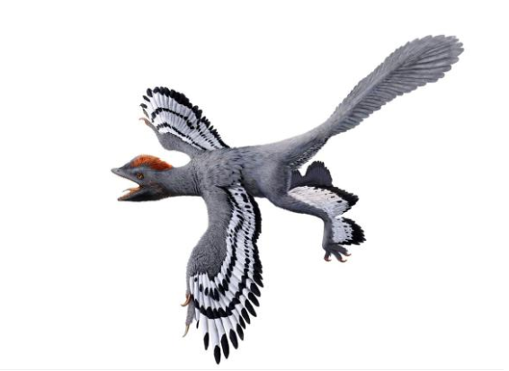
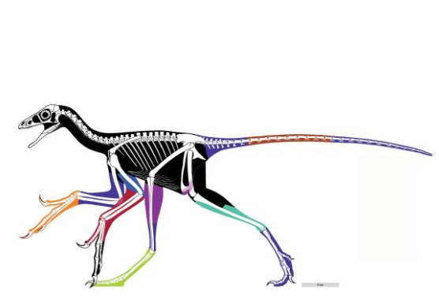

By lighting up Jurassic-era bones with lasers, researchers have added even more detail to our picture of the feathered dinosaur Anchiornis.
An advanced laser imaging technique revealed new details about the wing of the bird-like dinosaur Anchiornis, including the presence of previously unseen folds of skin in front of the elbow and behind the wrist.
By Jason Bittel
Picture a red-headed woodpecker crossed with a tiny velociraptor, and you have a good mental image of Anchiornis, a foot-high dinosaur that hails from the Late Jurassic.
That’s the conclusion of scientists who examined nine specimens of this ancient animal, lighting up its previously invisible soft tissues with high-powered lasers so they could get an even better idea of the dinosaur’s true dimensions.
The study shows that Anchiornis was remarkably bird-like, with drumstick-shaped legs and long forearms connected by a layer of skin called the patagium. It also had a slender tail and scaly footpads reminiscent of those on a chicken.
The discovery, described today in Nature Communications, adds to mounting evidence that a variety of dinosaurs had very bird-like traits as far back as 160 million years ago.
“Anchiornis was originally described as a bird,” says study coauthor Michael Pittman , a paleontologist at the University of Hong Kong. “But since then, different authors have provided evidence to [either] support its identity as an early bird or as a bird-like troodontid dinosaur.”
According to Pittman, “the best way to refer to Anchiornis is as a basal paravian, an early member of the group of dinosaurs that includes birds and the bird-like dinosaurs that share their closest common ancestor with birds.”
One of the biggest challenges of studying creatures that have been dead for millions of years is that, by the time we get to them, there usually isn’t much left. The skeletons paleontologists work with are almost never complete, and even well-preserved specimens can lack important context of life.
Still, while Anchiornis doesn’t have nearly the name recognition of Tyrannosaurus rex, Stegosaurus, or Triceratops, in some ways we may know more about this ankle-biter’s true appearance than any other dinosaur.
An illustration ofAnchiornis incorporates the latest details about its appearance based on multiple scientific studies.
The first Anchiornis fossils were discovered in northeastern China in 2009. Thanks to more than 200 specimens found since then, we now know this genus had four wings and a ton of feathers. In 2010, a groundbreaking study of the pigment-bearing melanosomes within those feathers revealed that Anchiornis had a black and gray body with white highlights and a red crest. (Read “True-Color Dinosaur Revealed: First Full-Body Rendering.”)
In the new study, Pittman and his coauthors teased out even more details about Anchiornis from its hidden tissues. More often than not, soft tissues such as organs, skin, and muscle do not make the journey through time. But sometimes, those tissues are actually still present in a fossil, they’re just invisible to the naked eye.
The team used a technique called laser-stimulated fluorescence, which involves shining high-powered lasers at a fossil sample in a dark room, making it glow, and then recording which wavelengths bounce off. This method can reveal features and levels of detail in fossils that are not visible under other conditions.
Laser-stimulated fluorescence “is part of a flurry of tools emerging that help us to understand the evolution of soft tissues along extinct lineages,” says John Hutchinson, a professor of evolutionary biomechanics at the Royal Veterinary College at the University of London.
As someone who studies how dinosaurs moved, Hutchinson says he deeply appreciates the “beautiful anatomy” and “stunning preservation” the study provides.
“I think their findings mainly add detail to our understanding of body shape, reinforcing prior conclusions, and especially refine understanding of the shape of the arms,” he says.
However, Hutchinson says he’d be curious to see the laser technique used on more modern bird and crocodile fossils as a way to determine whether the technique can truly reveal three-dimensional shape out of specimens squashed into two dimensions by millions of years of pressure.
Even though Pittman admits that not every fossil has the right mineralogy to react with laser light, he says that a huge inventory of fossils might yet benefit from the imaging technique.
“In our opinion, it should be in the top tray of any paleontologist’s toolbox, because it can so easily expand the anatomical information available from a fossil without damaging it,” says Pittman.
While questions of size, shape, and color are always interesting, another mystery has dogged this dinosaur since it was first discovered: Could the “near bird” use its feathered wings to fly?
Colors in this body outline of Anchiornis show which parts have been reconstructed using the laser imaging method.
Here, too, Pittman and his coauthor’s findings may be informative. The presence of a patagium—the skin linking the upper arm to the lower—helps generate lift and is an adaptation generally thought to be necessary for gliding or flight. The now extinct pterosaurs had them, as do bats and birds that are still alive today.
However, the authors note that simply having a patagium is no guarantee of lift-off, since some birds like the weka of New Zealand have them and are totally flightless.
“What our work does underscore,” says Pittman, “is the broad extent to which bird-like dinosaurs were experimenting with their anatomy and functional capabilities before we had the first unequivocal gliding and flying birds.”